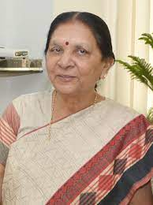

Anandiben Patel
Anandiben Patel is an Indian politician and the current Governor of Uttar Pradesh. She previously served as the first woman Chief Minister of Gujarat from 2014 to 2016.
Anandiben Patel is an Indian politician and the current Governor of Uttar Pradesh. She previously served as the first woman Chief Minister of Gujarat from 2014 to 2016.
Swami Chidanand Saraswati is a prominent spiritual leader and humanitarian who is committed to promoting interfaith harmony and environmental sustainability. He is the president of Parmarth Niketan Ashram in Rishikesh, India and has dedicated his life to serving humanity.
Yogendra Upadhyaya is an Indian politician and member of the 18th Uttar Pradesh Assembly and was also 16th Legislative Assembly of Uttar Pradesh. Upadhyaya is a member of the Bharatiya Janata Party and represented Agra South constituency of Uttar Pradesh.[1][2]